潭酒案例解析华与华品牌理论，称为“华与华品牌三角形”，是构建和管理品牌的完整架构与先进理论。品牌三角形的底边是产品结构，左边是话语体系，右边是符号系统。一个产品结构，一套话语体系和一套符号系统就构成了全部的品牌和品牌的全部。
产品结构、话语体系、符号系统组成了品牌的三位一体。产品结构：产品结构是品牌的物质存在，是品牌的本原。话语体系：无论是物理型态的产品还是服务产品，每个产品有个命名，每个产品有个定义，这个命名和定义就是品牌的话语体系，是品牌的文本传达。在华与华品牌三角形中，我们与现有品牌理论不同的地方，是将企业的事业理论、产品科学、品牌话语、企业文化，全都纳入品牌话语体系，并入品牌管理中。符号系统：每个产品或品牌，它都有一个感官上的体验。看着像什么样子，听上去是什么声音，摸起来是什么触感，闻起来是什么气味，吃进去是什么味道……这些品牌的感官信号就是它的符号系统。从哲学上来说，产品结构是物质属性，话语体系是意识形态，符号系统是运用人类集体潜意识的方法。所以，品牌三角形的三条边，分别代表物质、意识和潜意识。物质决定意识，同时意识对物质有能动作用，而品牌传播，是利用潜意识的艺术，这就是华与华方法的品牌哲学。在符号系统上我们有大量的案例积累，在产品结构上也有经典的代表案例。但是，在品牌话语体系上，除了华与华自己体系完备，还很少有客户能完全理解这一思想，贯彻在他的企业里。本文带来的潭酒案例，是华与华品牌三角形的标杆案例，也是华与华品牌话语体系的标杆案例。一个品牌就是一套话语体系，能维持百年的话语体系，就是百年品牌。
在潭酒的案例中，我们用“敢标真年份，内行喝潭酒”的品牌谚语， 一针捅破白酒行业年份虚标的社会问题。并逐步形成潭酒独特的真年份产品科学和产品结构，确立了“真年份+互联网”的事业理论。以及“真年份调酒节”和“真年份涨价节”两大品牌营销日历，最终让潭酒成为中国白酒行业先进文化的代表。除了华与华品牌三角形，学习本文，你还将学到 4 个核心知识点：1 、营销的两种价值观：一是利用信息不对称，消费者不需要真相，也不懂得产品科学，我只需要占领他的心智，蒙住他的眼睛，牵着他的手，让他选择我；二是让信息对称，假如信息对称，假如消费者是专家，懂得产品和服务的一切真相，他就一定会选择我！2 、产品科学：一个品牌，一定要是某些方面知识领先。知识就是力量，知识就是营销力量。人类知识的前沿在哪？不是在学校里，都在企业那里。最后知识体系转换为企业的话语体系来表达，也就是产品科学。它让企业成为这个领域的权威，最终成为这个领域的灯塔，才能够成为百年品牌。3 、事业理论：企业对社会问题的解决，必有一种理论，这一理论必是先进的，能令人信服，能解决问题，就是你对你所从事的这个事情有独特的认识，有独特的角度和系统的方法论，这就是事业理论。4 、品牌资产，就是品牌言说：品牌资产是包括品牌名字、标识、产品、包装、店面、广告、促销活动、公关活动、社会活动等等，和品牌有关的一切当中，能被消费者言说，从而给品牌带来购买和传播效益的部分。品牌资产必须是能言说的形式，不可言说，就不可传播。这基于口语在传播中至高无上的地位，而不是书面语，更不能总结概括，只做口语罗列。
1一针捅破天的品牌谚语华与华做项目的起手式是寻找社会问题，因为企业为解决社会问题而存在，一个社会问题就是一个商业机会。白酒行业最普遍的问题是白酒年份到底啥年份？ 50 年陈酿是真的存放了 50 年吗？在网上随手一搜“年份白酒”，就会弹出很多因为年份虚标而造成消费者起诉的新闻。
消费者对于“年份白酒”的质疑成为了一个普遍的社会问题。那么企业到底需不需要让消费者知道真相？营销有两种价值观：一是利用信息不对称，消费者不需要真相，也不懂得产品科学，我只需要占领他的心智，蒙住他的眼睛，牵着他的手，让他选择我。二是让信息对称，假如信息对称，假如消费者是专家，懂得产品和服务的一切真相，他就一定会选择我。什么叫营销？营销的本质是一种服务，给顾客的信息和咨询服务，它的背后是价值观。在信息对称的情况下，因为标准只有一个，那么必定会有最好的产品和服务。早在 2014 年，潭酒就开创了“真年份”，并每年都举办“潭酒真年份调酒节”，已经连续做了八年。潭酒也在行业里第一个推出“酿造年份+灌装年份”双标注的单一真年份酱酒。在“品位”、“价值”、“尊贵”等软概念满天飞的白酒市场，我们认为潭酒回归产品本质，做足“真年份”文章，是潭酒品牌的百年大计。因此，华与华为潭酒创作了一针捅破天的品牌谚语：敢标真年份，内行喝潭酒。
▲华与华为潭酒创意的品牌谚语
【敢标】是潭酒品牌敢为人先的勇气，也是作为建于 1964 年，赤水河老牌酱酒厂的底气。【真年份】解决了白酒行业年份虚标的社会问题，明确了潭酒品牌提供给消费者的产品价值；并给消费者购买潭酒的强大理由：买酱酒首选真年份。
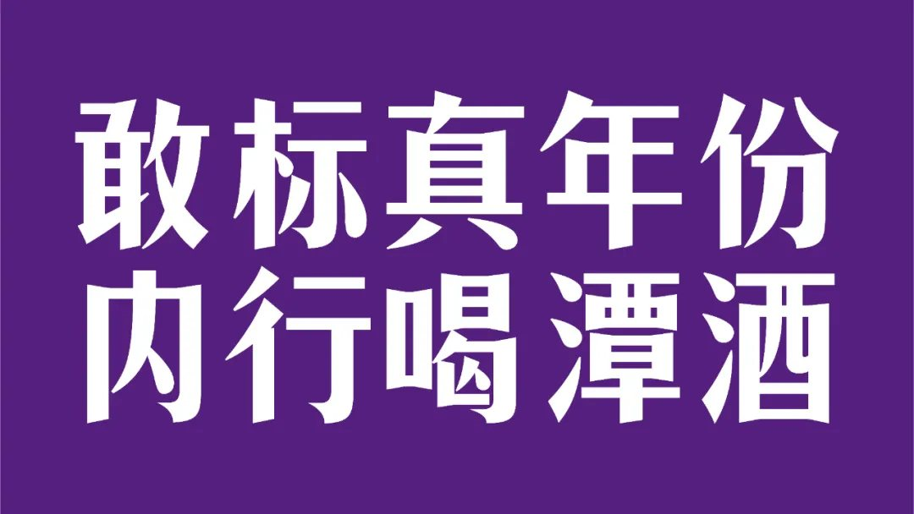
【内行】是在赞美消费者，也在召唤消费者。让爱酱酒、懂酱酒的内行消费者先喝潭酒，继而带动越来越多的外行消费者选择潭酒。【喝潭酒】口号里要有品牌名，而且口号就是行动，下达行动指令，直接告诉消费者喝潭酒。做营销、做品牌传播的工作，回到一个最古老的词——宣传，我们做的就是宣传工作，宣传就是为了要影响人的看法和行为。营销不就是要影响你的看法，让你认为我这个东西是你需要的吗？营销不就是要影响你的行为，让你来买我的东西吗？我们做的所有传播活动都要始终服务于一个最终目的——行动。这个行动有两个表现：一是他买我的产品；二是他跟别人推荐我的产品。要做到这两点，那么我们就要供消费者识别、记忆、传播的符号和词语。超级符号是要帮助消费者记忆和识别，而品牌谚语就是我们提供给消费者让他帮我们传播的关键。“敢标真年份，内行喝潭酒” 一针捅破了白酒行业“年份虚标”的社会问题，让消费者买潭酒的产品，并传颂潭酒的美名。
▲潭酒在全国核心市场投放机场、高铁站、高速大牌
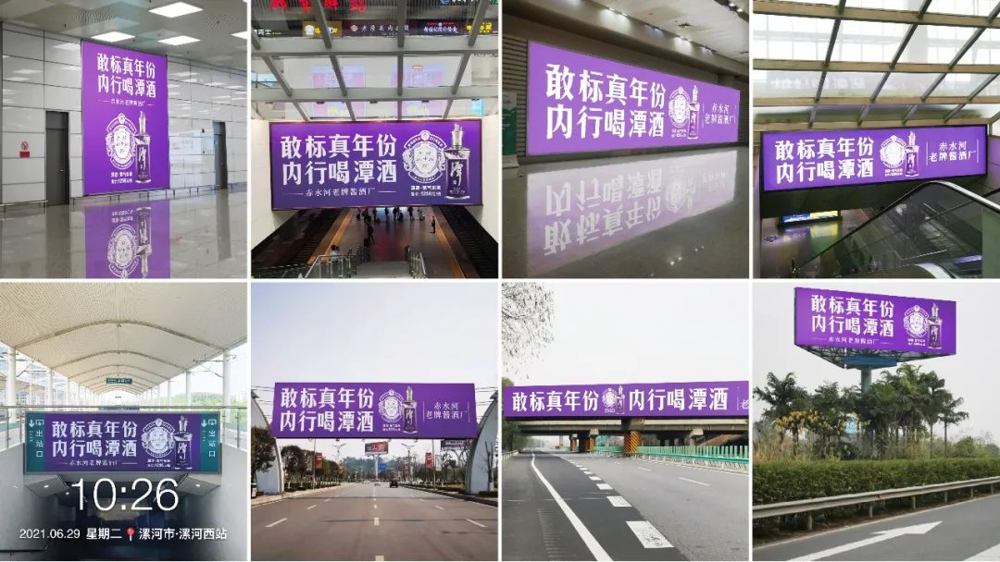
▲品牌谚语全面媒体化
2产品科学就是产品结构一个品牌，一定要是某些方面知识领先。知识就是力量，知识就是营销力量。人类知识的前沿在哪？不是在学校里，都在企业那里。企业知识体系，是用企业的话语体系来表达的，也就是我们说的产品科学。它让企业成为这个领域的权威，最终成为这个领域的灯塔，才能够成为百年品牌。如果企业的知识落后了，这个品牌一定会被淘汰。拿茅台举例，它就是通过“年份”掌握了酱酒品质的话语权和解释权，成为高端酱酒的权威。
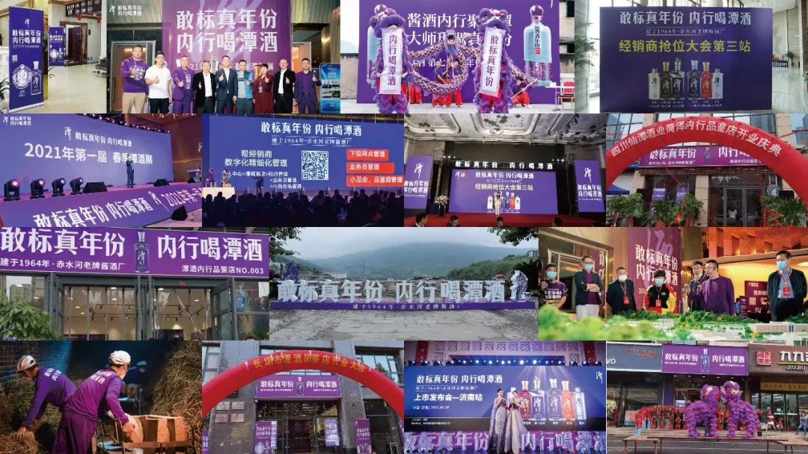
▲赤水河老牌酱酒厂——仙潭酒厂
潭酒酒厂建于 1964 年，是赤水河老牌酱酒厂，年生产酱酒 2 万多吨，储存规模达 8 万余吨，老酒存量 4 万吨，是行业知名的“原酒大王”，更是中国百大名酒背后的“英特尔”，为行业 180 多家名酒长期提供基酒，给这些中国百大名酒勾调好味道。懂酒的人都知道，尤其是酱酒，没有老酒勾调提味，酒的口感、层次、厚度是达不到的，酒的品质很难支撑，也就很难把产品卖到 600 、 1000 元，甚至更高。任何酱香酒都需要经过勾调才能好喝，而通过勾调，可以产出两种真实年份酱酒：一种是对同一年份酱酒的七个轮次基酒进行勾调，形成 100 %单一真年份酱酒。另一种是把调好的七轮次基酒和不同年份的老酒搭配，形成混调真年份酱酒。而勾调的老酒年份与比例稍有不同，酒的口感和味道也会不同。①基酒年份与比例；②基酒的七轮次组合；③最后是不同年份老酒的比例。一瓶酱酒的真实年份，就是上面三组数据组成的年份配比表。为了降低营销传播成本，让酱酒年份表成为潭酒品牌资产的一部分，我们就需要一个超级符号，让人秒懂酱酒真年份，并且一下记得住。
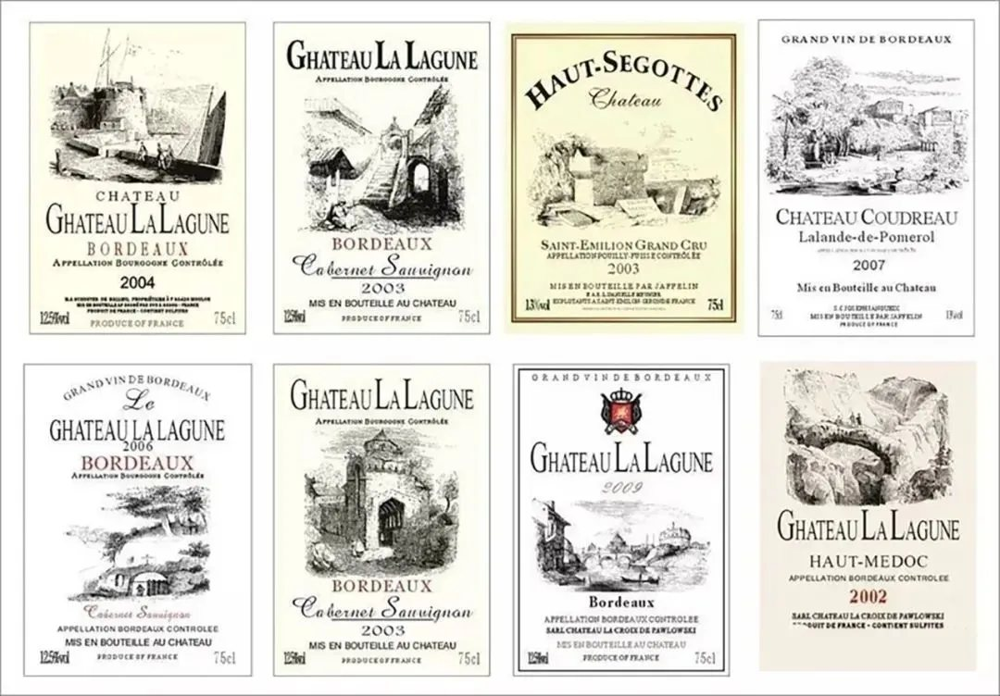
▲红酒酒标
我们从红酒酒标上找到了灵感和文化原力。红酒酒标就像是一款酒的身份证，它不仅是产品品质的背书，也是一款佳酿的人生故事。潭酒品牌超级符号：真年份龙标也因此应运而生。
▲潭酒品牌超级符号——真年份龙标
在真年份龙标的私有化上，我们做了两个处理：一是嫁接“酒坛”这一中国酒文化符号，将酒体年份及配比信息清清楚楚标注；
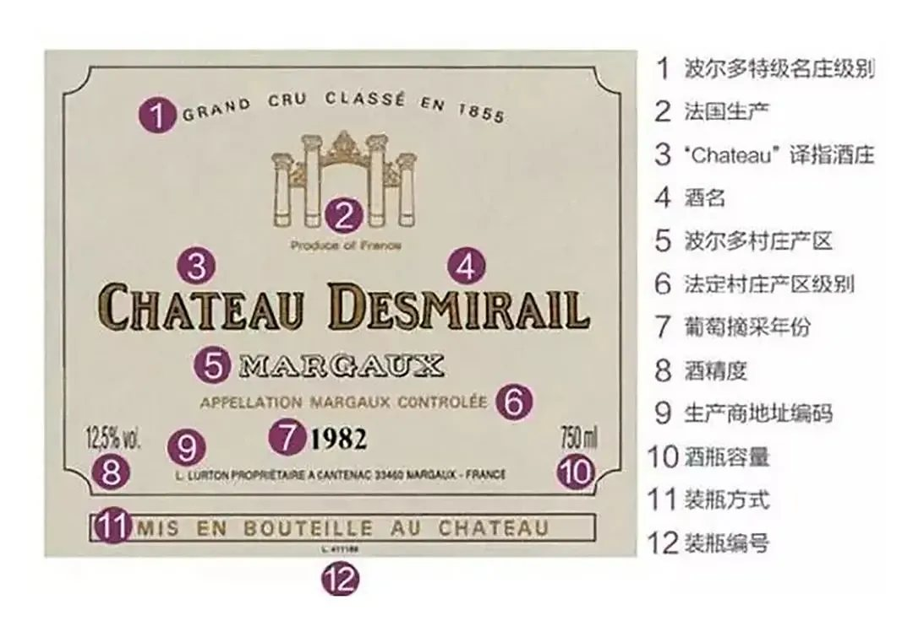
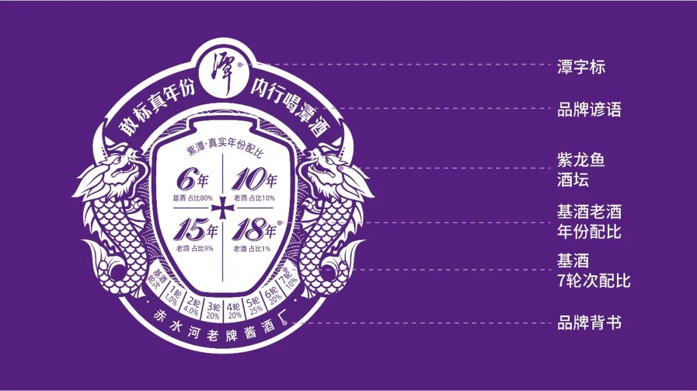
二是结合潭酒 1964 年龙年建厂，是赤水河老牌酱酒厂的企业历史，我们设计了“独角紫龙鱼”的超级品牌角色，形成潭酒独特的“真年份龙标”符号。
拿 紫 潭 酱 酒 为 例 ， 龙 标 中 间 分 别 标 出 6 年 基 酒 占 【 80 % 】、 10 年 【 10 % 】、 15 年【 9 %】、 18 年老酒【 1 %】的不同占比，底部是基酒 7 轮次配比。消费者只要看龙标，就能秒懂酱酒真年份，成为酱酒内行。通过真年份龙标，我们也在没有增加任何成本的情况下，就重新开发了潭酒产品；因为产品只要贴上龙标，就从过去一款普通酱酒，变成了一款真年份酱酒。
白酒行业是一个低门槛的传统行业，原料、工艺、储存等等各家酒厂都一样、可复制。而对于中国酱酒来说却有三个不可复制：
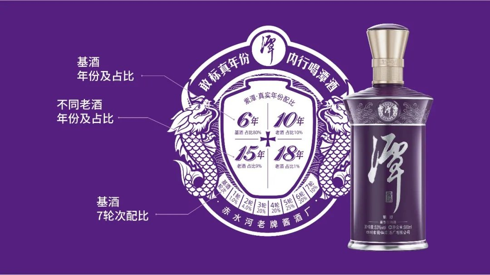
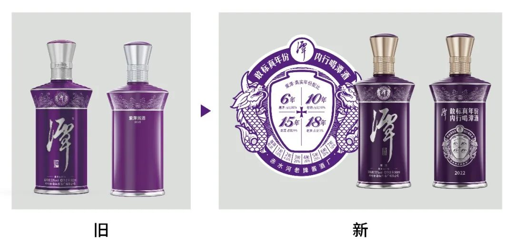
1 ）赤水河黄金产区不可复制，因为独特地理地貌形成的微生物菌群不可再生；2 ）老酒储能不可复制，因为历史沉淀不可再生；3 ）勾调技艺不可复制，因为时间和经验的积累不可再生。潭酒不仅是建于 1964 年的赤水河老牌酱酒厂，老酒存量 4 万吨；还是白酒行业的原酒大王，中国百大名酒背后的“英特尔”，积累了百家勾调技艺，能做到众口可调。这三大不可复制的品牌资源禀赋，让潭酒形成了以“百家勾调技艺”为基础，“单一”和“混调”两大酱香真年份的产品科学，也为真年份白酒市场创造了新的知识，成为真年份酱酒的首席知识官。潭酒的龙标就是真年份酱酒产品科学的知识说明书。产品科学就是产品结构，每一个真年份龙标就是一款潭酒产品，当消费者喝过紫潭酱酒，感觉不错后，就很容易跟着龙标去喝潭酒的其他产品。这样所有潭酒产品都互为广告，流量互通。我们卖任何一个产品，都为了卖下一个产品。所有的产品都是一个整体，是串联起来的，这就是产品结构。
▲潭酒构建了完整的真年份酱酒产品结构
3解决行业问题的事业理论什么是事业理论？企业对社会问题的解决，必有一种理论，这一理论必是先进的，能令人信服，能解决问题，就是你对你所从事的这个事情有独特的认识，有独特的角度

和系统的方法论，这就是事业理论。白酒行业是一个相对垄断的行业，能长期赚钱的品牌就那么几个，品牌经销代理的门槛和投入高，只集中在少数几个经销商手里。大部分经销商只能去代理品质低、价格高的酒，追求短期利益大，因而造成白酒市场劣币驱逐良币，串货乱价特别普遍，很多品牌短期赚钱、长期不赚钱。而对消费者来说中国白酒品牌有上千种，但值得信赖的品牌却很少。白酒产品的年份和价格虚标也是多年以来的消费痛点。消费者买酒是靠广告，包装，和所谓的年份标注来判断，买得不明不白。针对商家和消费者的两大问题，潭酒确立了企业经营使命：让消费者明明白白消费，让商家长期稳定赚钱。并用“真年份”+“互联网”的事业理论和运营模式把白酒重做一遍。
▲潭酒事业理论——用互联网把白酒重做一遍
商家要长期稳定挣钱，厂家必须要控得了价格。潭酒是中国首家标价即卖价，全国统一价的厂家。潭酒产品所有价格都通过一张表标明，真实年份真实价格，货真价实不虚标。潭酒也是中国酒业第一家实现“一物一码”、“五码赋能”的企业。通过互联网，潭酒可以实现线上签约发货、直配倒返，管住了物流也就管住了价格。潭酒，已经成为从供应链，到支付、返利、收益结算，全链路线上实时运作的白酒企业。
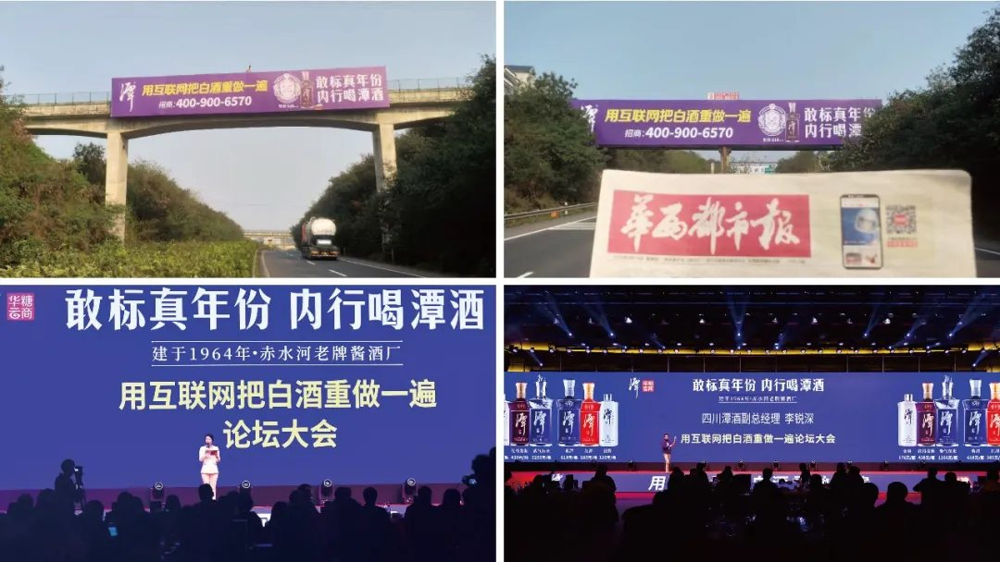
▲潭酒是中国酒业第一家实现“一物一码”、“五码赋能”的企业
在“真年份”+“互联网”的模式运营下，潭酒的商家 0 打款、 0 压货、 0 配送、低市场库存，主要负责落地厂家政策、协同厂家推广，服务烟酒店、实现快速签约、动销，完成市场布局。与此同时，通过数字化实时渠道运营管理，落地人效管理，潭酒可以把经营目标拆解到每一个业务员、每一个经销商、每一个终端；实时数据，高频复盘，及时发现问题调整策略，确保目标达成。很多酒企都不知道自己的消费者在哪里，但潭酒知道。今年潭酒线上直接触达消费者156 万人、“酱香潭酒全国化 全国门店送潭酒”活动总参与人数超过 55 万人。通过精准用户运营，潭酒不仅给经销商费用，并且在品鉴、消费、复购、会员全链路中台精准运营，推给消费者真正感兴趣而且真正想要的产品。
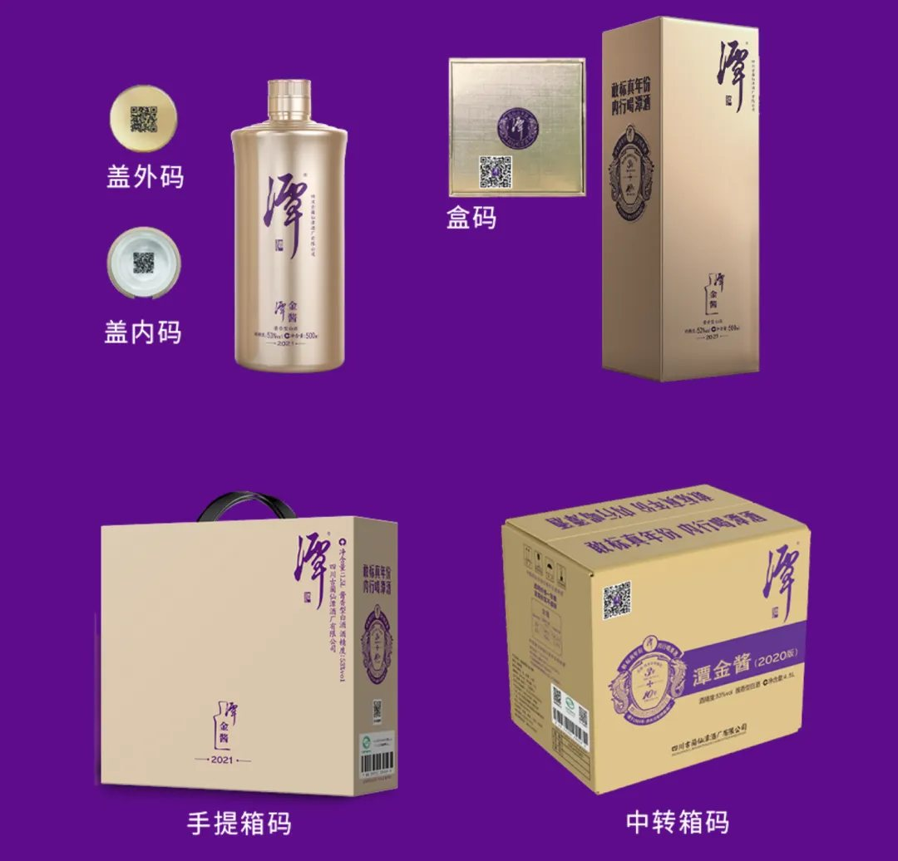
潭酒形成自己独特的“真年份”+“互联网”的事业理论，并通过这套打法展现出强大的品牌增长力。潭酒从 2020 年底到 2021 年底业务区人数从 212 人扩展至 1200 人，布局省份从 12 个扩展至 27 个，城市覆盖从 78 座扩展至 200 座，经销商数量从 263 家扩展至 2100 家，网点数量从 1394 家扩展至 40000 +家。
4营销日历增值品牌资产企业经营主要就是两个视角，一个是成本，另一个就是投资。投资需要形成资产。所以，华与华讲品牌资产观。什么叫品牌资产？能给我们带来效益的消费者品牌认知就叫品牌资产。什么叫品牌资产观？就是每一分钱的投资，都要形成资产，能形成资产我就做，不能形成资产我就不做，这样就能排除废动作。那么我们真正去打造一个品牌资产，到底是要打造什么？华与华认为，品牌资产就是品牌言说，这是和“超级符号就是超级创意”同等分量的一句话，也是华与华品牌资产理论的核心。品牌资产包括品牌名字、标识、产品、包装、店面、广告、促销活动、公关活动、社会活动等等，和品牌有关的一切当中，能被消费者言说，从而给品牌带来购买和传播效益的部分。必须是言说的形式，是华与华方法品牌资产学说的关键，不可言说，就不可传播。这基于口语在传播中至高无上的地位，而不是书面语，更不能总结概括，只做口语罗列。
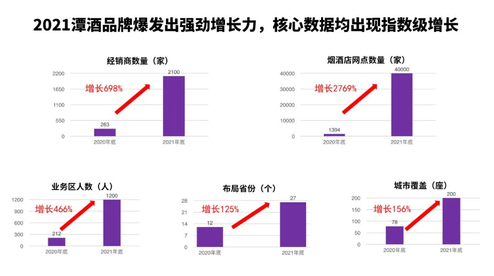
潭酒的品牌资产，首先当然是品牌名字，潭酒。然后就是“敢标真年份，内行喝潭酒”的品牌谚语；再其次，是“真年份龙标”的超级符号和品牌紫色；最后我们打的 “用互联网把白酒重做一遍” 的口号也成为了针对渠道招商的品牌资产。这样，我们就可以表述潭酒的五大品牌资产：1 ）潭酒；2 ）敢标真年份，内行喝潭酒；3 ）读懂龙标，秒变酱酒内行；4 ）紫色；5 ）用互联网把白酒重做一遍。这些言说的话语，就是能给企业带来“买我产品，传我美名”效益的品牌资产。华与华定位自己为企业的战略营销品牌终身顾问，我们每年为客户提供的关键服务就是保护品牌资产、增值品牌资产。今年华与华为潭酒新增了两大品牌营销日历活动资产：1 、针对连续举办八届的潭酒真年份调酒节，我们提出管用一百年的口号——“喝老酒，存新酒”。
▲潭酒真年份调酒节口号——“喝老酒 存新酒”
这是一句能召唤所有懂酱酒、爱酱酒的内行消费者的超级口号，因为这是全天下内行消费者潜移默化，主动自发遵守的酱酒消费习惯。具有强大的行动指令性和成规模地卷入消费者。
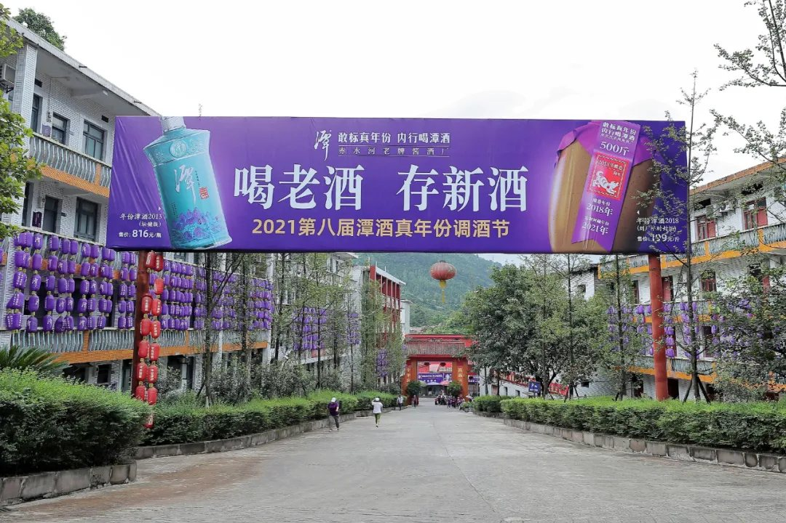
最为关键的是潭酒开创的酱酒真年份，真正能满足“喝老酒，存新酒”的消费需求，在调酒节上我们也针对性地开发了两款产品：一个是 8 年坛储版、每年限量发行的生肖纪念酒；另一个是“酿造年份+灌装年份”双标注的到厂限时封坛酒。两款都是单一真年份酱酒，只在每年的调酒节上发布，这样也就能牢牢地占据“喝老酒，存新酒”这句超级口号，让潭酒真年份调酒节成为真正属于中国酱酒内行的节日。
▲“紫龙鱼”卡通形象在 2021 年调酒节亮相
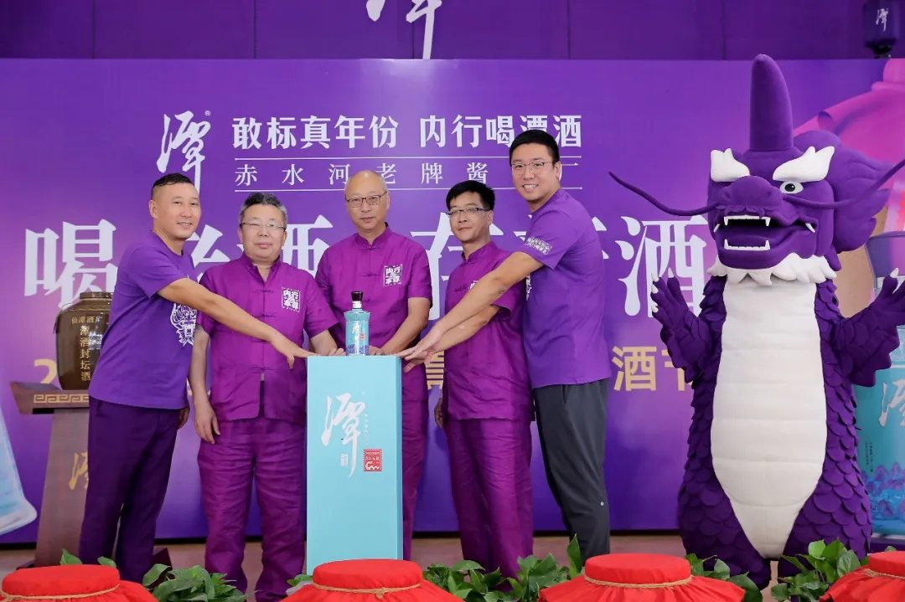
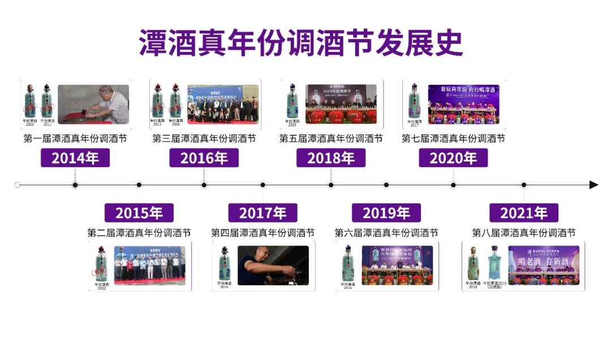
2021 第八届潭酒真年份调酒节因为疫情原因采用线上直播方式， 3 个小时超 15 万人在线观看， 12 大直播平台累计观看人数达 200 万人，全网见证年份潭酒 2018 配比诞生和年份潭酒 2013 （坛储版）问世。年份潭酒 2013 （坛储版）上线 3 天，招商 149 家，销量 3017 万元。
▲年份潭酒 2013 （坛储版）在 2021 年调酒节上市
2 、由于潭酒把传统的经销商到终端商的层层加价销售模式，改为了销售返利模式，减少了渠道乱价的动力。并且通过物流直配，消费者扫产品包装上的二维码支付，做到了标多少卖多少、线上线下全国统一价。潭酒就能做到每年元旦节全线产品就涨价，因为酱酒年份上涨，价格就会上涨，这样就诞生了潭酒每年的第二个重大品牌节日——潭酒真年份涨价节：一到元旦，潭酒就涨价。
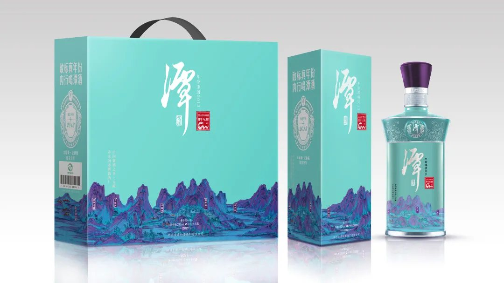
▲潭酒真年份涨价节口号——“一到元旦 潭酒就涨价”
2021 年潭酒真年份涨价节已于 12 月 1 日正式开启，华与华为潭酒真年份涨价节创意并制作的超级醒脑歌曲也正式发布。
潭酒真年份涨价节歌曲华与华1分钟
至此，围绕“真年份”潭酒投资并建立了“真年份调酒节+真年份涨价节”两大品牌营销日历活动资产，而且是行业绝无仅有的，只有潭酒有，也只有潭酒能做。
5案例总结一个品牌就是一套话语体系很多人都说，口号就是一个推广的创意，每隔一段时间就要更新一次。但在华与华方法里，口号就是战略，口号就是投资，口号就是行动。口号直至企业战略根底，是牵一发而动全身的。华与华讲，口号不仅说事，而且做事。
· 敢标真年份，内行喝潭酒· 透明价格一张表，货真价实不虚标· 读懂龙标，秒变酱酒内行· 让消费者明明白白消费，让商家长期稳定赚钱· 用互联网把白酒重做一遍· 潭酒真年份调酒节：喝老酒，存新酒· 潭酒真年份涨价节：一到元旦，潭酒就涨价
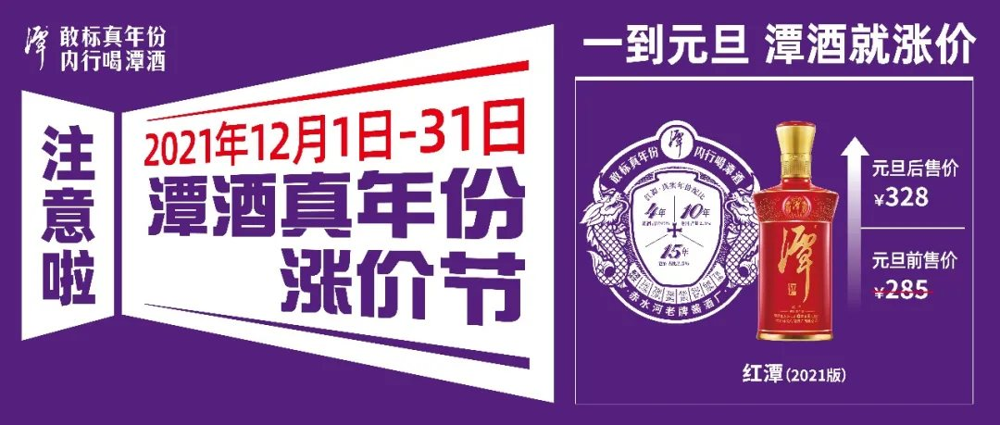
一个品牌，就是一套话语体系，能维持百年的话语体系，就是百年品牌。也可以说：一个公司，一个组织，就是一套话语体系。整个世界，就是一个物质结构、话语体系和符号系统。万物同理，人类文明和宇宙，都可以装进华与华品牌三角形。
话语体系是个语言哲学问题，一切基于语言表述。在互联网时代，特别是移动互联网时代，万物互联时代，企业和消费者的距离越来越近，近到什么程度呢？近到“地球村”的程度，媒介环境学把互联网称为人类的返祖现象，是重返部落时代，在一个村子里，部落里。这不再是大众传播时代，你包装出一个“形象”，别人远远地顶礼膜拜。而是“同村眼里无伟人”，你的一举一动，都没有隐私；你的家长里短，都有吃瓜群众；你的“私下谈话”不复存在，每一句话都是“全村儿都知道”，一出事就“全村儿都完了”。所以，品牌传播已没有内外之分，必须一以贯之，一竿子插到底。同时，这也带来前所未有的机会，你的事业理论和企业文化可以由内而外，由近及远，影响“全村人”。潭酒首先是立足于一个正确的营销价值观，让信息对称，假如信息对称，假如消费者是专家，懂得产品和服务的一切真相，他就一定会选择我！营销的本质是一种服务，给顾客的信息和咨询服务，它的背后是价值观。在信息对称的情况下，因为标准只有一个，那么必定会有最好的产品和服务。在“品位”“价值”“尊贵”等软概念满天飞的白酒市场，潭酒回归酱酒产品本质，开创并定义真年份酱酒，推动行业创造新的价值标准，实现了潭酒品牌的价值突围。
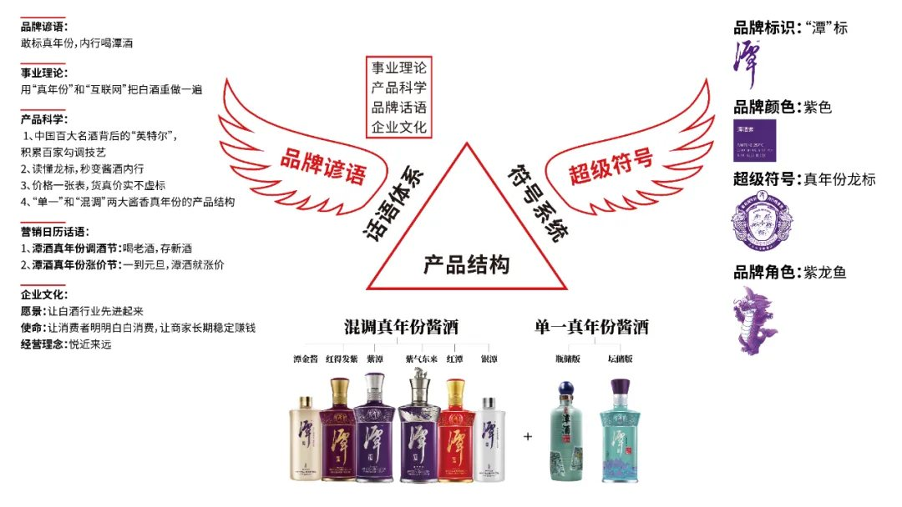
未来的市场是消费者消费知识的日益丰富和品牌话语权的再分配，谁帮助消费者建立消费知识，谁就拥有了话语权。在潭酒的案例中，我们用“敢标真年份，内行喝潭酒”的品牌谚语， 一针捅破白酒行业年份虚标的社会问题。并逐步形成潭酒独特的真年份产品科学和产品结构，确立了“真年份+互联网”的事业理论，以及“真年份调酒节”和“真年份涨价节”两大品牌营销日历。最终让潭酒成为代表白酒顾客的根本利益，代表白酒行业的先进生产力，代表白酒行业先进文化的现象级标杆案例。